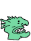

100 creatures are paired up and are fighting. Creatures can be eliminated within these battles if their health score reaches zero. Remaining creatures continue with the pairing up and fighting process until only one creature remains. The remaining creature is deemed the winner.
There are four creature types: witches, dragons, snakes and river trolls.
Each creature is generated at random using the following strength and health ranges:
Witches
Dragons
Snakes
River Trolls
The game is controlled at random by rolling a pair of dice, by clicking on the 'Roll the Dice' button.
Once the dice has been rolled, the table will update to show opponents and stats. Underneath the table will be the respective matchups.
If there are no doubles rolled, then the code will jump past the next stage direct to stage 3 - fight mode.
If there are doubles rolled, then the game will apply at random the powers issued. The table will also show the powers generated for the respective creature. Where the matchups are shown underneath the table, the powers will also be displayed there too.
Pressing the 'Process Power' button will apply the powers to the creature table and amend the creature stats accordingly.
Underneath the table you will see the actual power stats that have been applied. For example, a power could be 'Increases strength between 1 - 100'. In this circumstance the summary will show the actual strength value applied (i.e. 56 if that is the random value generated).
Also shown is the calculated value of the health points that will be lost if the fight completes. Note that there are cases which will mean that the opponent will not lose additional health points, such as:
Pressing the 'Fight' button will initiate the battle between paired up creatures.
The battle commences in the correct fighting order. The creature going first performs the first strike and health points are lost by the opponent. To calculate health points lost, add the creature's strength who is attacking to the sum of the dice. If the opponent is left with health points greater than zero, then the opponent will strike and cause the first fighter to lose health points. If a creature is reduced to zero health points, then it is eliminated.
When the stage is over, the page will update the main table and list the creatures that were eliminated in that round.
If one creature remains, then the battle is over and the trophy and medal are displayed. At this stage you can press the reset button to restart the game.
If more than one creature remains, then the game continues with the remaining creatures and goes back to stage one for the next fighting round.
A special power only lasts for one fighting round.
If there are an odd number of creatures, then a creature will be picked at random to not participate in the round of fighting. If this creature has been granted a special power, then it will not be processed.
The action buttons are available for creature modification throughout the duration of the game(delete creature/add health/remove health).
Once the winner is announced the action buttons for creature modification will become greyed out. Clicking the action buttons at this stage will have no effect.
The game is reset by clicking the reset button or reloading the page.